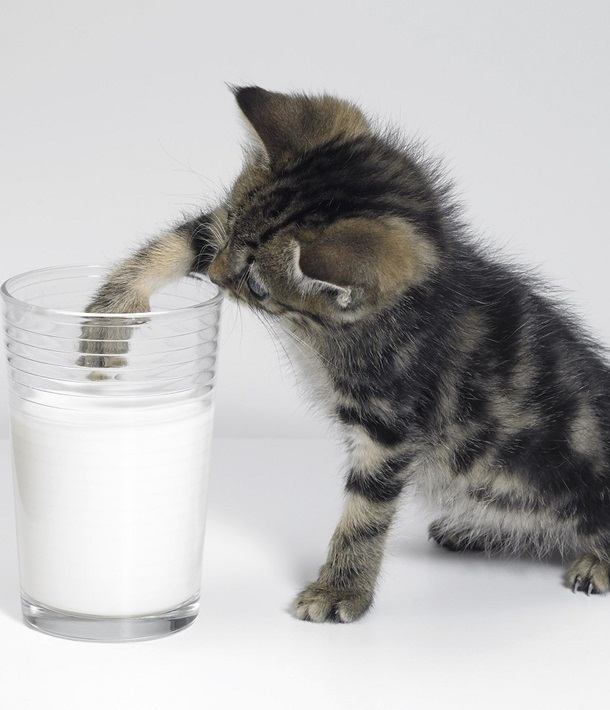
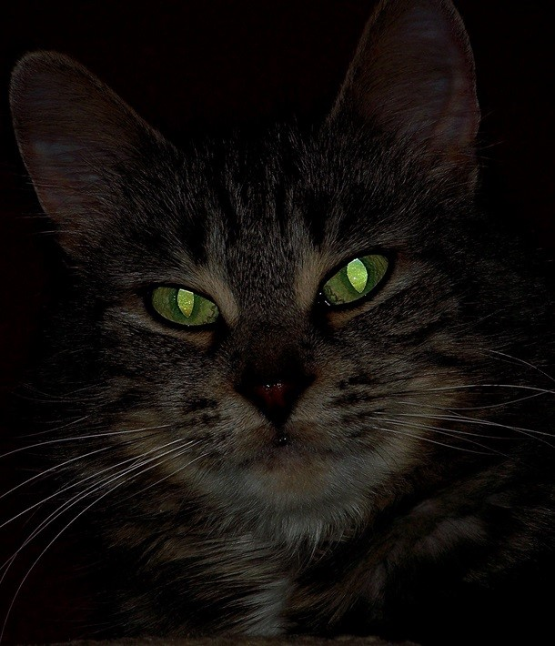
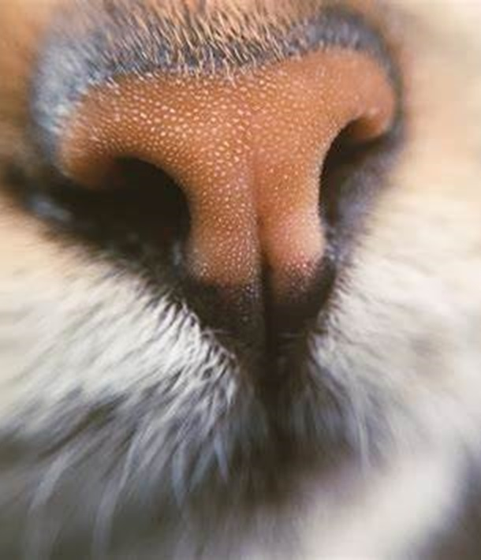

Os gatos são criaturas fascinantes e cheias de peculiaridades. Vamos explorar algumas curiosidades sobre esses adoráveis felinos:
Leite não é o melhor alimento para gatos:
- A imagem de gatos bebendo leite de vaca é comum em séries e filmes, mas a verdade é que a maioria dos gatos adultos desenvolve intolerância à lactose.
- O leite de vaca não é recomendado para esses animais. Durante o período de lactação, os gatinhos produzem uma enzima chamada“lactase” para digerir o leite materno.
- Após o desmame, a produção dessa enzima diminui, tornando o leite de vaca inadequado. Se encontrar um gatinho órfão, consulte um veterinário para adquirir fórmula láctea específica para gatos.
Os gatos não percebem os sabores doces:
- Diferentemente dos humanos, os gatos não têm receptores para sabores doces.
- Eles preferem alimentos com sabor salgado ou amargo, como carne e peixe.

Emitem muitos sons para se comunicar:
- Os gatos fazem cerca de 100 sons diferentes para expressar suas emoções e necessidades.
- Miados, ronronados, grunhidos e guinchos são algumas das formas de comunicação felina.
Visão noturna superior à dos humanos:
- A visão noturna dos gatos é melhor que a nossa.
- Seus olhos possuem células sensíveis à luz, permitindo que vejam no escuro.
Bigodes funcionam como receptores:
- Os bigodes dos gatos são altamente sensíveis e ajudam a detectar mudanças no ambiente.
- Eles usam os bigodes para medir espaços e avaliar se conseguem passar por aberturas.
Dormem até 16 horas por dia:
- Os gatos são verdadeiros mestres do sono.
- Passam cerca de 2/3 do dia dormindo, o que significa que, em 9 anos de vida, estão acordados apenas 3 anos

Animais crepusculares:
- Os gatos são mais ativos ao amanhecer e ao anoitecer.
- Essa característica está relacionada à sua ancestralidade como caçadores noturnos.
Não gostam de água parada:
- A maioria dos gatos não aprecia água parada.
- Alguns, no entanto, adoram brincar com água corrente.
Barriga para cima indica conforto:
- Quando um gato está de barriga para cima, é um sinal de que se sente seguro e confortável.
Nariz é a impressão digital dos gatos:
- Cada gato tem um padrão único no nariz, semelhante à nossa impressão digital.
